library(SmoothPLS)
#> Warning: replacing previous import 'fda::matplot' by 'graphics::matplot' when
#> loading 'SmoothPLS'
#> Warning: replacing previous import 'pls::loadings' by 'stats::loadings' when
#> loading 'SmoothPLS'
#> Warning: replacing previous import 'dplyr::lag' by 'stats::lag' when loading
#> 'SmoothPLS'
#> Warning: replacing previous import 'dplyr::filter' by 'stats::filter' when
#> loading 'SmoothPLS'
library(pls)
#> Warning: package 'pls' was built under R version 4.4.2
#>
#> Attaching package: 'pls'
#> The following object is masked from 'package:stats':
#>
#> loadingsThis notebook show the Smooth PLS algorithm for a multi-states Categorical Functional Data (MS-CFD).
Parameters
N_states = 3
nind = 100 # number of individuals (train set)
start = 0 # First time
end = 100 # end time
curve_type = 'cat'
TTRatio = 0.2 # Train Test Ratio means we have floor(nind*TTRatio/(1-TTRatio))
NotS_ratio = 0.2 # noise variance over total variance for Y
beta_0_real=65.4321 # Intercept value for the link between X(t) and Y
nbasis = 10 # number of basis functions
norder = 4 # 4 for cubic splines basis
regul_time = seq(start, end, 5) # regularisation time sequence
regul_time_0 = seq(start, end, 1)
int_mode = 1 # in case of integration errors.Data generation
lambda_determination
# Initialized the lambdas values
lambdas = lambda_determination(N_states)
lambdas
#> [1] 0.06615003 0.21686661 0.17015218tranfer_probabilities
# Initialized the transition matrix
transition_df = transfert_probabilities(N_states)
transition_df
#> dir1 dir2 dir3
#> state_1 0.00000000 0.0774743 0.92252570
#> state_2 0.95311191 0.0000000 0.04688809
#> state_3 0.08929956 0.9107004 0.00000000df_cfd
df_cfd = generate_X_df_multistates(nind = nind, N_states, start, end,
lambdas, transition_df)
head(df_cfd)
#> id time state
#> 1 1 0.0000000 3
#> 2 1 0.1855830 2
#> 3 1 0.6599301 1
#> 4 1 5.4101517 3
#> 5 1 21.4324942 2
#> 6 1 27.9593073 1
plot_CFD_individuals(df_cfd)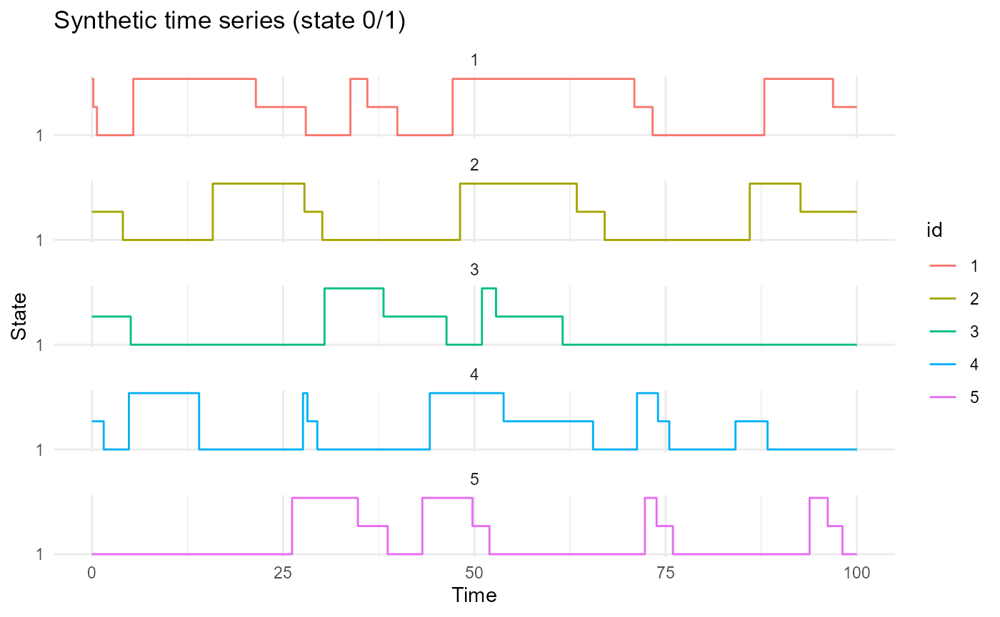
plot_CFD_individuals(df_cfd, by_cfda = TRUE)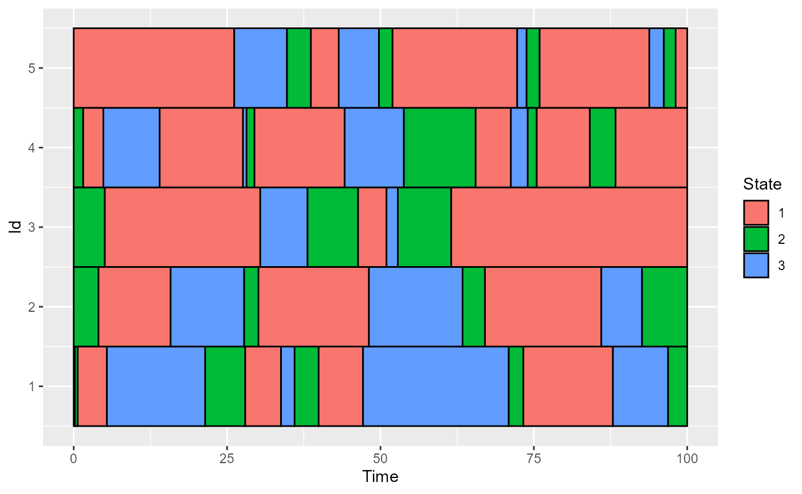
Basis creation
All the states will share the same basis.
basis = create_bspline_basis(start, end, nbasis, norder)
#basis = fda::create.fourier.basis(c(start,end), nbasis = nbasis)
# All the states will share the same basis.
basis_list = obj_list_creation(N_rep = N_states, obj = basis)
plot(basis, main=paste0(nbasis, " ", basis$type," functions basis"))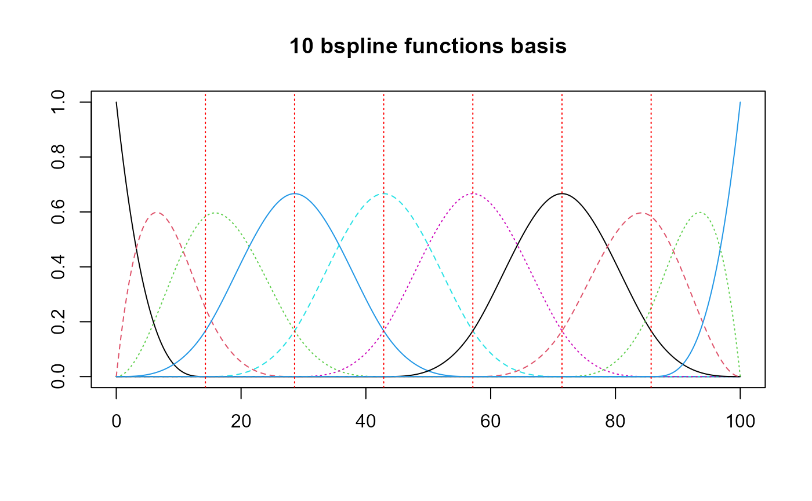
Data processing
We have to prepare the data before the FPLS method. For each state, we build its indicatrice function.
names(df_cfd)
#> [1] "id" "time" "state"cat_data_to_indicatrice
df_processed = cat_data_to_indicatrice(df_cfd)
length(df_processed)
#> [1] 3
names(df_processed)
#> [1] "state_1" "state_2" "state_3"
head(df_processed$state_3, 20)
#> id time state
#> 1 1 0.000000 1
#> 2 1 0.185583 0
#> 4 1 5.410152 1
#> 5 1 21.432494 0
#> 7 1 33.788584 1
#> 8 1 36.004940 0
#> 10 1 47.160908 1
#> 11 1 70.910305 0
#> 13 1 87.895108 1
#> 14 1 96.879386 0
#> 15 1 100.000000 0
#> 16 2 0.000000 0
#> 18 2 15.802012 1
#> 19 2 27.782732 0
#> 21 2 48.123304 1
#> 22 2 63.385478 0
#> 24 2 85.998012 1
#> 25 2 92.634954 0
#> 26 2 100.000000 0
#> 27 3 0.000000 0beta list
##### beta_real #####
###### beta_0_real ######
beta_0_real
#> [1] 65.4321
beta_func_list = beta_list_generation(N_states = N_states)Y evaluation
Y generation is based on the following equation : $Y = 0 + {i=1}^K _0^T _i(t) ind_i(t) dt $ with the indicatrice function of the state .
We link with the .
Y_df = generate_Y_df(df = df_processed, curve_type = curve_type,
beta_real_func_or_list = beta_func_list,
beta_0_real = beta_0_real,
NotS_ratio = NotS_ratio)
Y = Y_df$Y_noised
names(Y_df)
#> [1] "id" "Y_beta1" "Y_beta2" "Y_beta3" "Y_real" "Y_noised"
head(Y_df)
#> id Y_beta1 Y_beta2 Y_beta3 Y_real Y_noised
#> 1 1 29.21242 8.445168 -12.27938095 90.81031 83.70702
#> 2 2 29.33400 43.357133 -6.28448556 131.83875 128.92156
#> 3 3 61.59767 -32.556458 1.38131403 95.85463 115.60919
#> 4 4 21.89818 21.223380 -0.02003002 108.53363 109.42723
#> 5 5 56.99972 4.546594 -1.81193494 125.16648 126.80503
#> 6 6 18.74040 24.931901 -6.06344099 103.04096 124.77715Test set
nind_test = floor(nind*TTRatio/(1-TTRatio))
df_test = generate_X_df_multistates(nind = nind_test, N_states, start, end,
lambdas, transition_df)
df_test_processed = cat_data_to_indicatrice(df_test)
Y_df_test = generate_Y_df(df_test_processed, curve_type = curve_type,
beta_real_func_or_list = beta_func_list,
beta_0_real = beta_0_real,
NotS_ratio= NotS_ratio)PLS functions
Naive PLS
naivePLS_obj = naivePLS(df_list = df_cfd, Y = Y, regul_time_obj = regul_time,
curve_type_obj = 'cat',
id_col_obj = 'id', time_col_obj = 'time',
print_steps = TRUE, plot_rmsep = TRUE,
print_nbComp = TRUE,plot_reg_curves = TRUE)
#> ### Naive PLS ###
#> => Input format assertions.
#> => Input format assertions OK.
#> => Data formating.
#> => PLS model.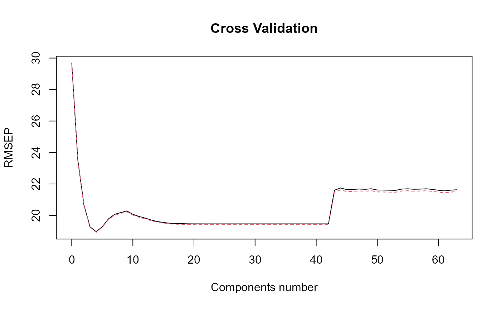
#> [1] "Optimal number of PLS components : 4"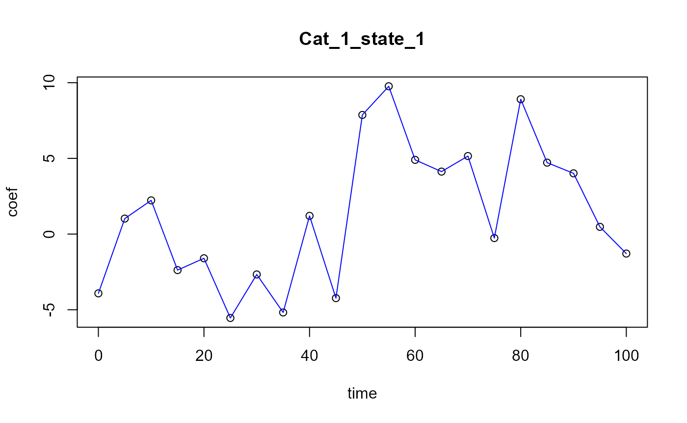
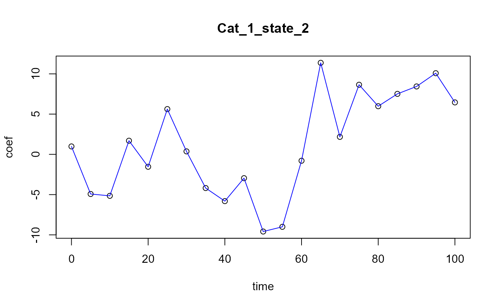
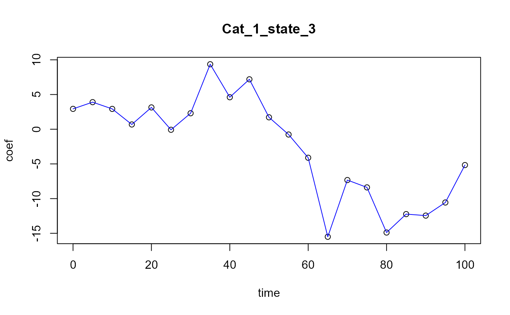
Functional PLS
fpls_obj = funcPLS(df_list = df_cfd, Y = Y_df$Y_noised,
basis_obj = basis,
curve_type_obj = 'cat',
regul_time_obj = regul_time,
id_col_obj = 'id', time_col_obj = 'time',
print_steps = TRUE, plot_rmsep = TRUE,
print_nbComp = TRUE, plot_reg_curves = TRUE)
#> ### Functional PLS ###
#> => Input format assertions.
#> => Input format assertions OK.
#> => Building alpha matrix.
#> => Building curve names.
#> ==> Evaluating alpha for : CatFD_1_1.
#> ==> Evaluating alpha for : CatFD_1_2.
#> ==> Evaluating alpha for : CatFD_1_3.
#> => Evaluate metrix and root_metric.
#> => plsr(Y ~ trans_alphas).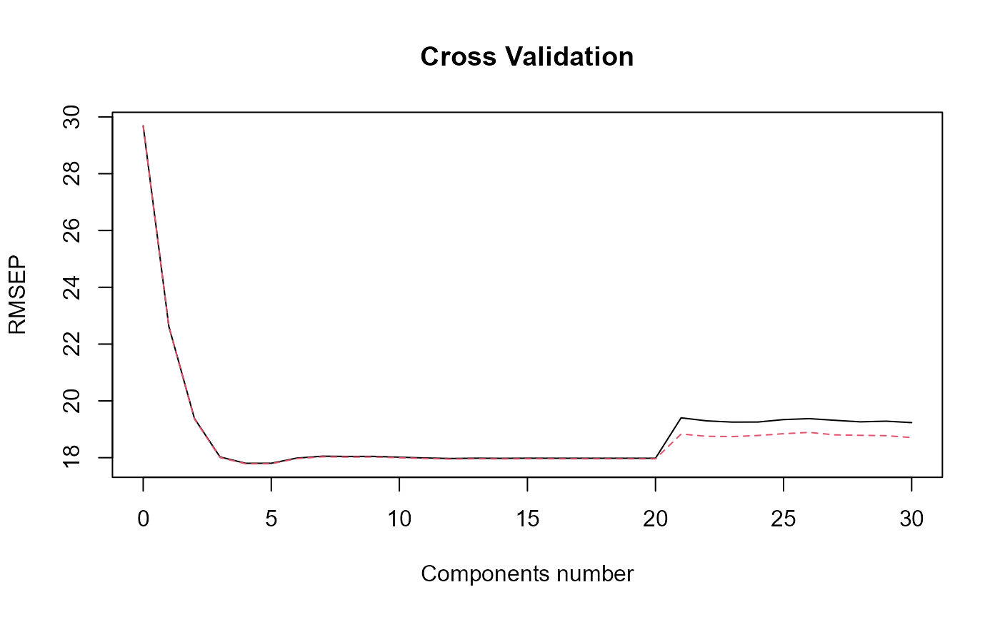
#> Optimal number of PLS components : 4 .
#> => Build Intercept and regression curves for optimal number of components.
#> ==> Build regression curve for : CatFD_1_1
#> ==> Build regression curve for : CatFD_1_2
#> ==> Build regression curve for : CatFD_1_3Smooth PLS
spls_obj = smoothPLS(df_list = df_cfd, Y = Y_df$Y_noised, basis_obj = basis,
orth_obj = TRUE, curve_type_obj = 'cat',
int_mode = 1,
id_col_obj ='id', time_col_obj = 'time',
print_steps = TRUE, plot_rmsep = TRUE,
print_nbComp = TRUE, plot_reg_curves = TRUE)
#> ### Smooth PLS ###
#> => Input format assertions.
#> => Input format assertions OK.
#> => Orthonormalize basis.
#> => Data objects formating.
#> => Evaluate Lambda matrix.
#> ==> Lambda for : CatFD_1_state_1.
#> ==> Lambda for : CatFD_1_state_2.
#> ==> Lambda for : CatFD_1_state_3.
#> => PLSR model.
#> => Optimal number of PLS components : 8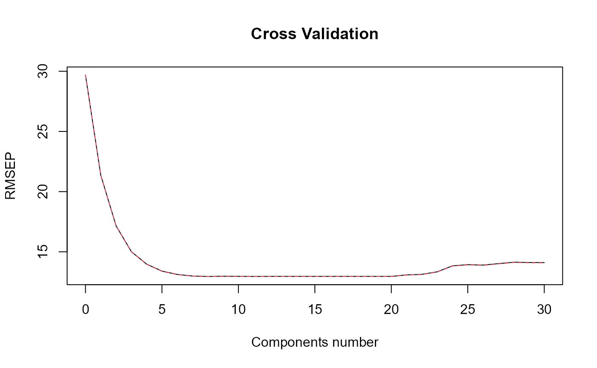
#> => Evaluate SmoothPLS functions and <w_i, p_j> coef.
#> => Build regression functions and intercept.
#> ==> Build regression curve for : CatFD_1_state_1
#> ==> Build regression curve for : CatFD_1_state_2
#> ==> Build regression curve for : CatFD_1_state_3
names(spls_obj$reg_obj)
#> [1] "Intercept" "CatFD_1_state_1" "CatFD_1_state_2" "CatFD_1_state_3"Curves comparison
# Warning ms_spls_obj$delta_ms_list[[1]] is the intercept!
cat("curve_1 : smooth PLS regression curve.\n")
#> curve_1 : smooth PLS regression curve.
cat("curve_2 : functional PLS regression curve.\n")
#> curve_2 : functional PLS regression curve.
cat("curve_3 : naive PLS regression coefficients\n")
#> curve_3 : naive PLS regression coefficients
for(i in 1:N_states){
start = 0
print(paste0("State_", (i)))
evaluate_curves_distances(real_f = beta_func_list[[i]],
regul_time = regul_time,
fun_fd_list = list(spls_obj$reg_obj[[i+1]],
fpls_obj$reg_obj[[i+1]],
approxfun(
x = regul_time,
y = naivePLS_obj$opti_reg_coef[
start:(start+length(regul_time)
)])
)
)
start = start + length(regul_time)
}
#> [1] "State_1"
#> [1] "real_f -> curve_1 / INPROD : 16.508353624482 / DIST : 11.0314619032886"
#> [1] "real_f -> curve_2 / INPROD : 29.35771321548 / DIST : 12.1643874463008"
#> [1] "real_f -> curve_3 / INPROD : -97.5807530400409 / DIST : 38.0034665676067"
#> [1] "State_2"
#> [1] "real_f -> curve_1 / INPROD : -24.5437368903076 / DIST : 13.8035954719839"
#> [1] "real_f -> curve_2 / INPROD : 34.9726370135252 / DIST : 18.1278375794415"
#> [1] "real_f -> curve_3 / INPROD : -79.5832409085427 / DIST : 46.6402437750422"
#> [1] "State_3"
#> [1] "real_f -> curve_1 / INPROD : 104.419870266053 / DIST : 29.5476645925441"
#> [1] "real_f -> curve_2 / INPROD : 32.0542919126671 / DIST : 10.9087010603926"
#> [1] "real_f -> curve_3 / INPROD : -175.099318045128 / DIST : 50.0606852145429"
for(i in 1:N_states){
start = 0
y_lim = eval_max_min_y(f_list = list(spls_obj$reg_ob[[i+1]],
fpls_obj$reg_ob[[i+1]],
approxfun(
x = regul_time,
y = naivePLS_obj$opti_reg_coef[
start:(start+length(regul_time))]),
beta_func_list[[i]]
),
regul_time = regul_time_0)
plot(regul_time_0, beta_func_list[[i]](regul_time_0), col = 'black',
ylim = y_lim, xlab = 'Time', ylab = 'Value', type = 'l')
lines(regul_time_0, approxfun(x = regul_time,
y = naivePLS_obj$opti_reg_coef[
start:(start+
length(regul_time))])(regul_time_0),
col = 'green')
title(paste0(names(spls_obj$reg_obj)[i+1], " regression curves"))
plot(spls_obj$reg_obj[[i+1]], col = 'blue', add = TRUE)
plot(fpls_obj$reg_obj[[i+1]], col = 'red', add = TRUE)
legend("topleft",
legend = c("Real curve", "NaivePLS coef",
"SmoothPLS reg curve", "FunctionalPLS reg curve"),
col = c("black", "green", "blue", "red"),
lty = 1,
lwd = 1)
start = start + length(regul_time)
}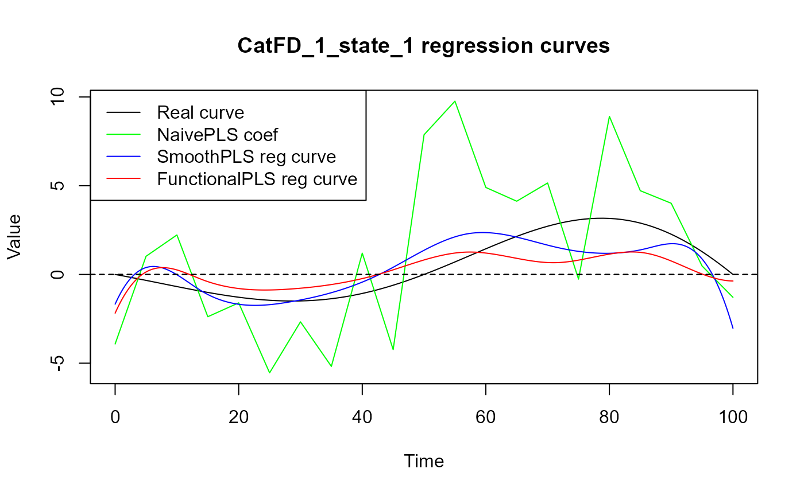
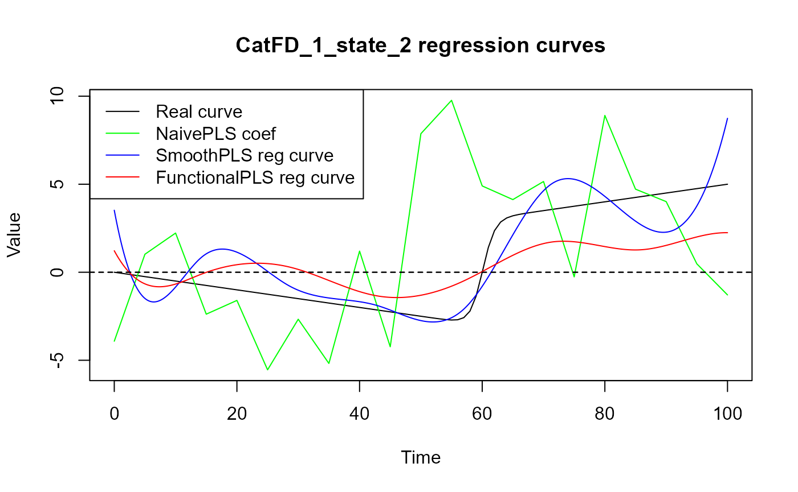
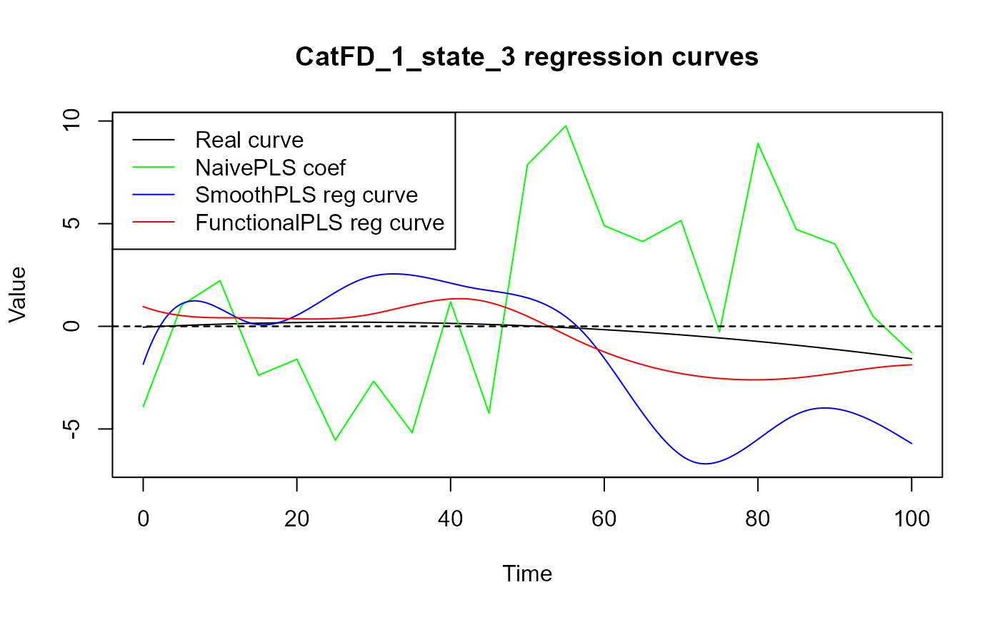
Results
train_results = data.frame(matrix(ncol = 5, nrow = 3))
colnames(train_results) = c("PRESS", "RMSE", "MAE", "R2", "var_Y")
rownames(train_results) = c("NaivePLS", "FPLS", "SmoothPLS")
test_results = train_resultsTrain set
Y_train = Y_df$Y_noised
# Naive
Y_hat = predict(naivePLS_obj$plsr_model,
ncomp = naivePLS_obj$nbCP_opti,
newdata = naivePLS_obj$plsr_model$model$`as.matrix(df_mod_wide)`)
train_results["NaivePLS", ] = evaluate_results(Y_train, Y_hat)
# FPLS
Y_hat_fpls = (predict(fpls_obj$plsr_model, ncomp = fpls_obj$nbCP_opti,
newdata = fpls_obj$trans_alphas)
+ fpls_obj$reg_obj$Intercept
+ mean(Y))
Y_hat_fpls = smoothPLS_predict(df_predict_list = df_cfd,
delta_list = fpls_obj$reg_obj,
curve_type_obj = curve_type,
int_mode = int_mode,
regul_time_obj = regul_time)
train_results["FPLS", ] = evaluate_results(Y_train, Y_hat_fpls)
# Smooth PLS
Y_hat_spls = smoothPLS_predict(df_predict_list = df_cfd,
delta_list = spls_obj$reg_obj,
curve_type_obj = curve_type,
int_mode = int_mode,
regul_time_obj = regul_time)
train_results["SmoothPLS", ] = evaluate_results(Y_train, Y_hat_spls)
train_results["NaivePLS", "nb_cp"] = naivePLS_obj$nbCP_opti
train_results["FPLS", "nb_cp"] = fpls_obj$nbCP_opti
train_results["SmoothPLS", "nb_cp"] = spls_obj$nbCP_opti
train_results
#> PRESS RMSE MAE R2 var_Y nb_cp
#> NaivePLS 14470.45 12.02932 9.491085 0.8324632 83.24632 4
#> FPLS 15673.88 12.51954 10.267672 0.8185302 66.79698 4
#> SmoothPLS 64016.98 25.30158 20.707567 0.2588209 277.94668 8Test set
Y_test = Y_df_test$Y_noised
# Naive
df_test_wide = naivePLS_formating(df_list = df_test,
regul_time_obj = regul_time,
curve_type_obj = curve_type,
id_col_obj = 'id', time_col_obj = 'time')
Y_hat = predict(naivePLS_obj$plsr_model,
ncomp = naivePLS_obj$nbCP_opti,
newdata = as.matrix(df_test_wide))
test_results["NaivePLS", ] = evaluate_results(Y_test, Y_hat)
# FPLS
Y_hat_fpls = smoothPLS_predict(df_predict_list = df_test,
delta_list = fpls_obj$reg_obj,
curve_type_obj = curve_type,
int_mode = int_mode,
regul_time_obj = regul_time)
test_results["FPLS", ] = evaluate_results(Y_test, Y_hat_fpls)
# Smooth PLS
Y_hat_spls = smoothPLS_predict(df_predict_list = df_test,
delta_list = spls_obj$reg_obj,
curve_type_obj = curve_type,
int_mode = int_mode,
regul_time_obj = regul_time)
test_results["SmoothPLS", ] = evaluate_results(Y_test, Y_hat_spls)
test_results["NaivePLS", "nb_cp"] = naivePLS_obj$nbCP_opti
test_results["FPLS", "nb_cp"] = fpls_obj$nbCP_opti
test_results["SmoothPLS", "nb_cp"] = spls_obj$nbCP_opti
test_results
#> PRESS RMSE MAE R2 var_Y nb_cp
#> NaivePLS 1629.118 8.072466 6.566654 0.8931642 104.78335 4
#> FPLS 2045.938 9.046409 7.468720 0.8658295 63.63048 4
#> SmoothPLS 9395.897 19.386487 16.376717 0.3838270 273.43670 8Plot results
train_results
#> PRESS RMSE MAE R2 var_Y nb_cp
#> NaivePLS 14470.45 12.02932 9.491085 0.8324632 83.24632 4
#> FPLS 15673.88 12.51954 10.267672 0.8185302 66.79698 4
#> SmoothPLS 64016.98 25.30158 20.707567 0.2588209 277.94668 8
test_results
#> PRESS RMSE MAE R2 var_Y nb_cp
#> NaivePLS 1629.118 8.072466 6.566654 0.8931642 104.78335 4
#> FPLS 2045.938 9.046409 7.468720 0.8658295 63.63048 4
#> SmoothPLS 9395.897 19.386487 16.376717 0.3838270 273.43670 8
plot_model_metrics_base(train_results, test_results)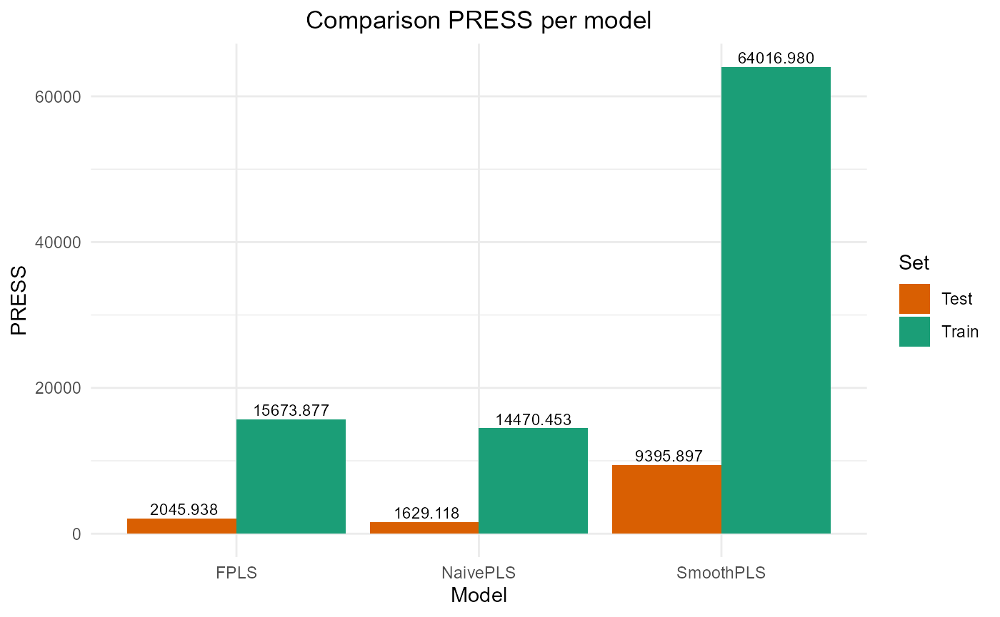
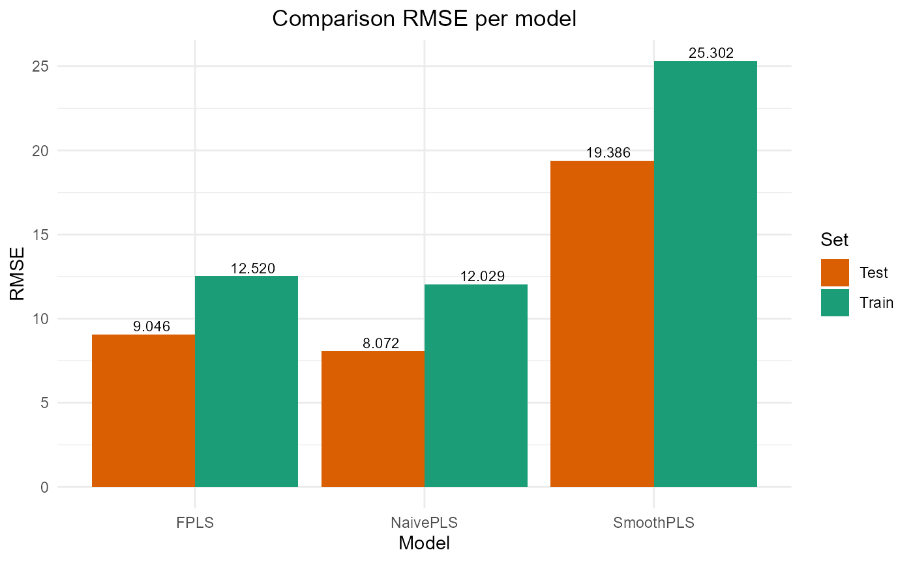
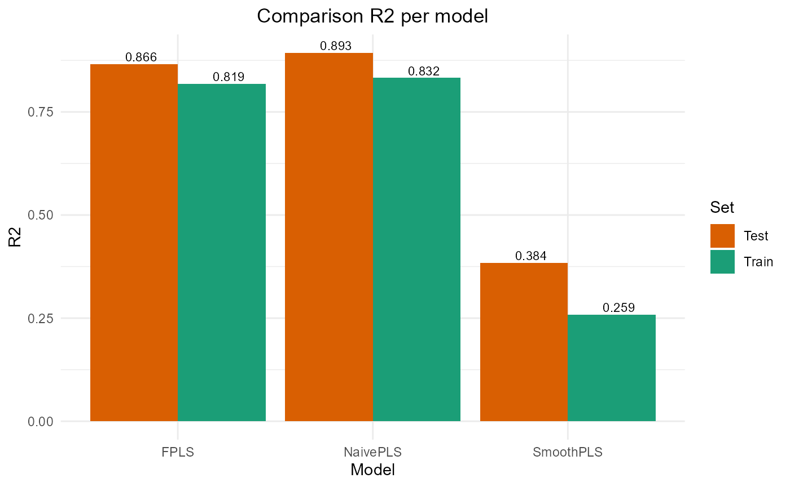
plot_model_metrics_base(train_results, test_results,
models_to_plot = c('FPLS', 'SmoothPLS'))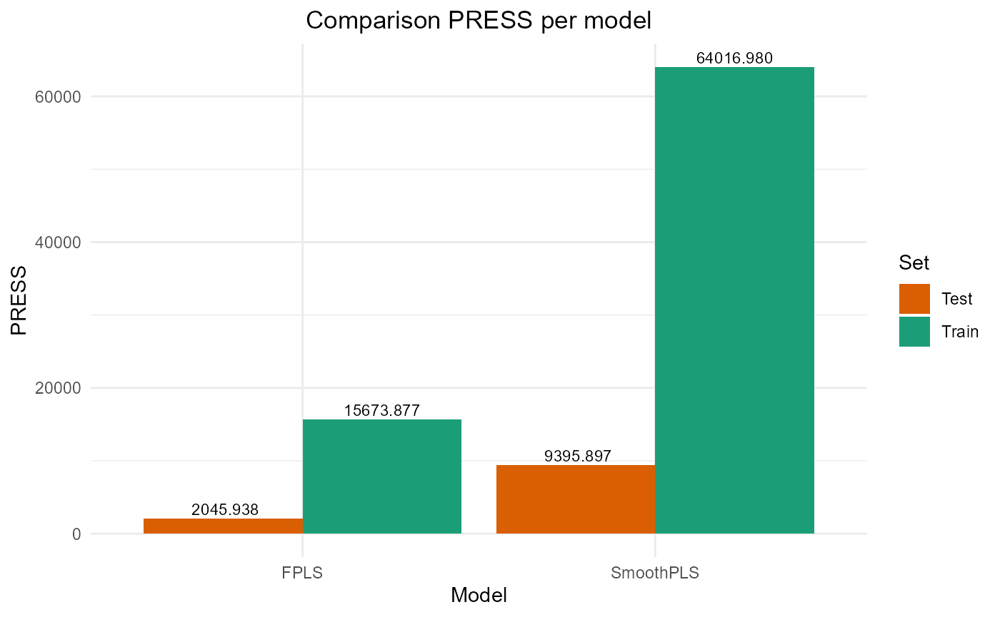
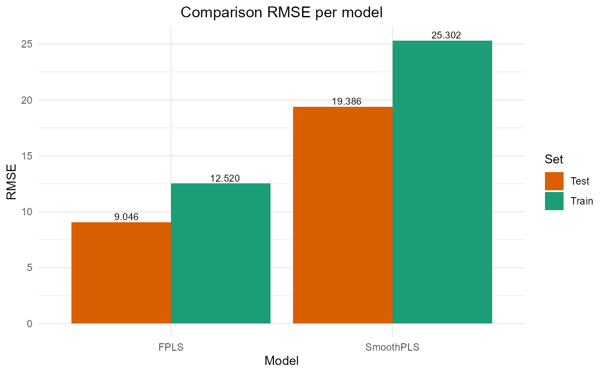
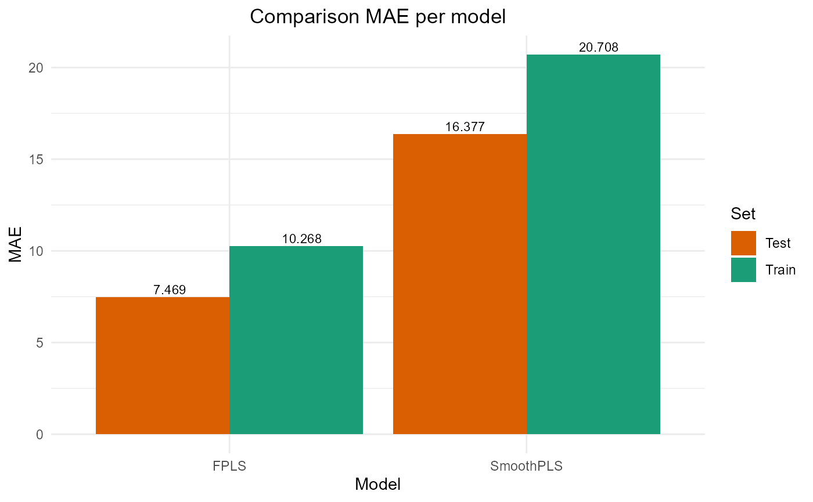
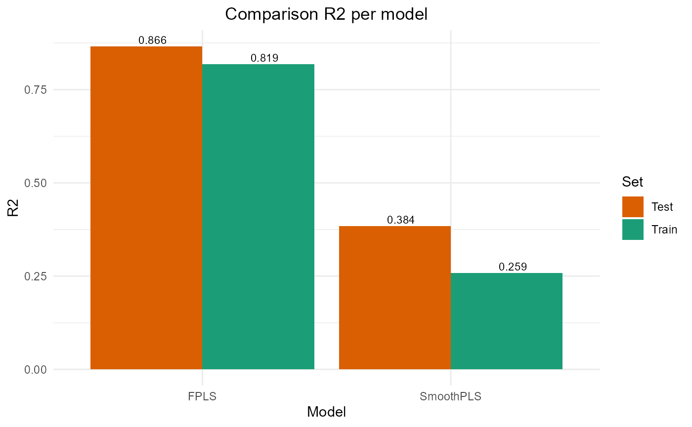